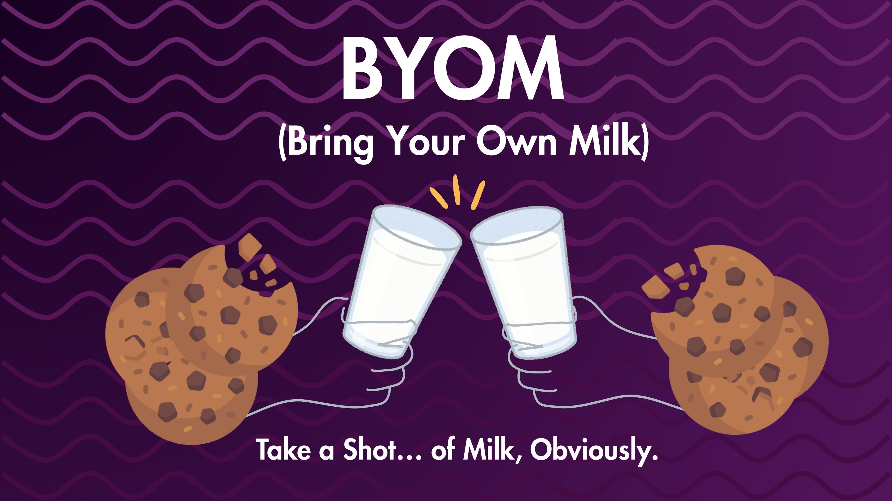
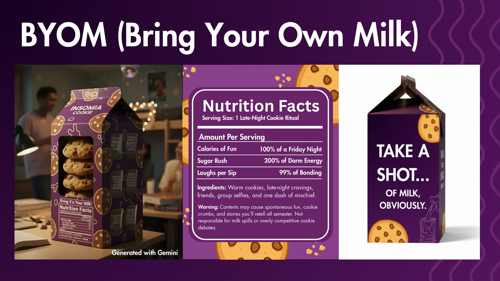
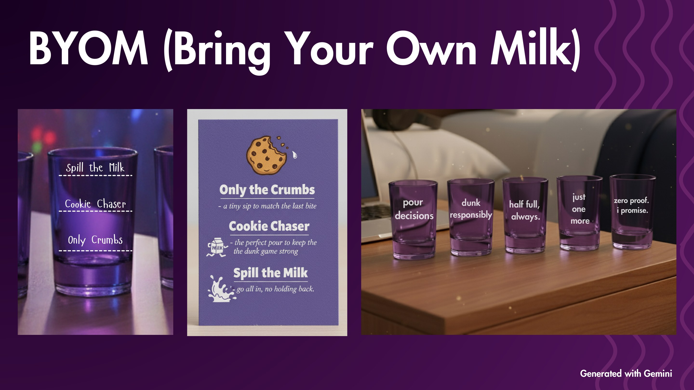

Insomnia Cookies — BYOM
A zero-proof pregame built around cookies, milk and dorm-room ritual.

Give first-year students a ritual of their own.
Boston College freshmen want the shared energy of a college pregame, but a campus without Greek life offers fewer natural entry points. The opportunity was to create belonging without imitating alcohol culture literally.

The best rituals come with objects and language.
A repeatable moment becomes memorable when people can hold it, photograph it and quote it. Cookies and milk already have the behavior; they needed a playful campus code.
BYOM: Bring Your Own Milk.
A classic milk carton arrives filled with cookies and collectible Insomnia shot glasses, each marked with the perfect milk pour and lines like 'dunk responsibly' and 'zero proof, I promise.'

Take a shot… of milk, obviously.
The carton, nutrition-facts parody and glassware turn late-night snacking into a safe social ceremony designed for dorm rooms, group selfies and stories students keep retelling.
From thought
to touchpoint.
- Experience concept
- Packaging system
- Collectible glassware
- Copy platform
- Campus activation
“Belonging does not require copying an existing ritual. A brand can create a better one from a behavior it already owns.”